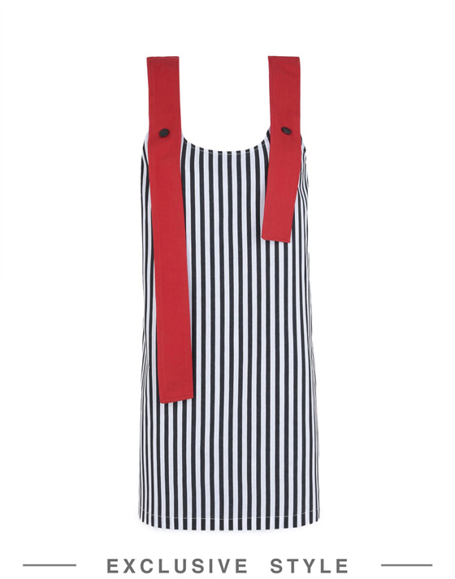
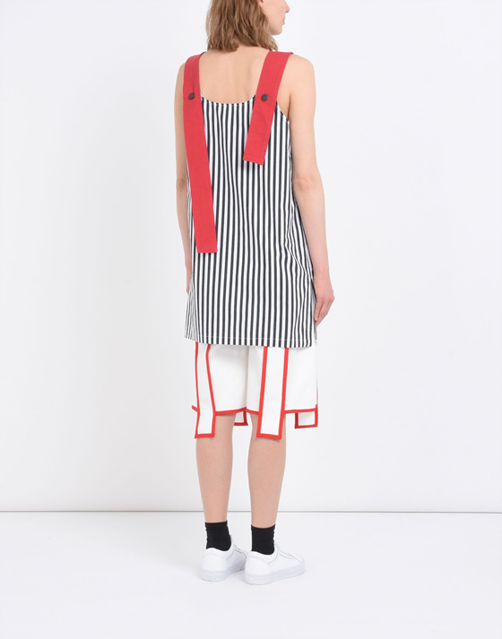

올해 2월에 우연히 JI WON CHOI 란 디자이너를 발견하고 너무 취향이라 포스팅을 했었는데
(JI WON COHI: http://komx2.egloos.com/6297533)
YOOX 에서 JI WON CHOI X YOOX 로 제품이 나왔다는 소식을 듣고
이 디자이너의 옷을 한벌정도 꼭 소장하고 싶어서 5월쯤 위 원피스를 구매했지만
아직 한번도 입질 못했습니다..............OTL
안에 깜장 목폴라.................는 내가 싫고 (네크라인 좁은옷 입으면 바보같아보이고 스스로도 답답해서 못견딤;;)
전에 사놓은 검정셔츠는 생각보다 안어울렸고 무엇보다 원피스 재질이 좀 빳빳해서 어렵(?)습니다;;
크흑흑 언젠간 꼭 입고 외출을 하고말테다 (치토스말투로)
플러스 올해 하반기는 어떻게 지나가는지도 모를정도로 정신이 없었습니다;;
대부분 열이 받아있었고 똥멍청이들을 욕하면서 보냈습니다;;;
하반기 내가 젤 잘한일은 디아3를 사서 플레이한것
겜플레이 스트레스 해소에 도움이 됩니다 ;ㅂ;
예전에 런던서 회사 막 들어가서 인턴하면서 인터넷 거지같은 임시숙소에서 1달 머물면서 주구장창 디아2를 플레이했는데
힘들때 나의 친구 디아블로 넌 최고야///
플러스 올해 잘한일은 이북리더기를 구입한 것
알라딘에서 크레마사운드 구입했는데
확실히 도서구매가 늘었습니다. 공간 차지할 걱정안해도 되어서 좋구요 :)
그래도 주말에 악착같이 페어랑 전시보러 다니고 놀러다녔는데
날도 춥고 12월 되니 HP도 절반이하로 훅 꺽인것 같고 해서 따순집에서 뒹구는 시간이 더 많아진것 같습니다
옷을 좀 평소에 자주/많이 입을수 있는걸 사야할텐데 말이져;;;;; (반성은 하지만 개선은 전혀되지 않는점;;)